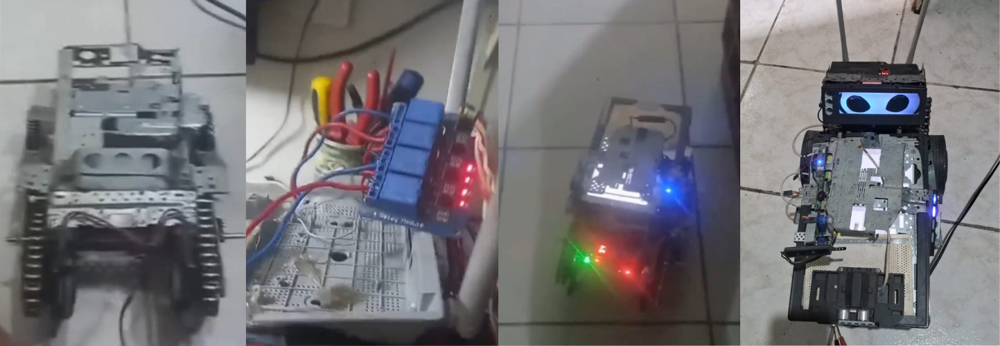
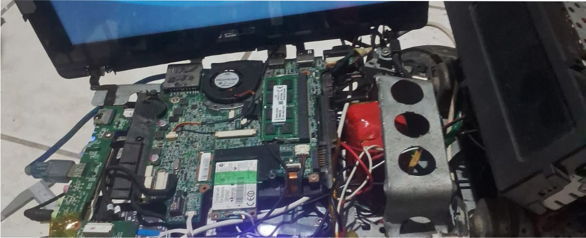
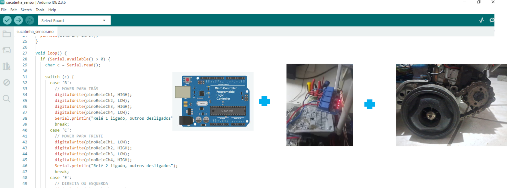
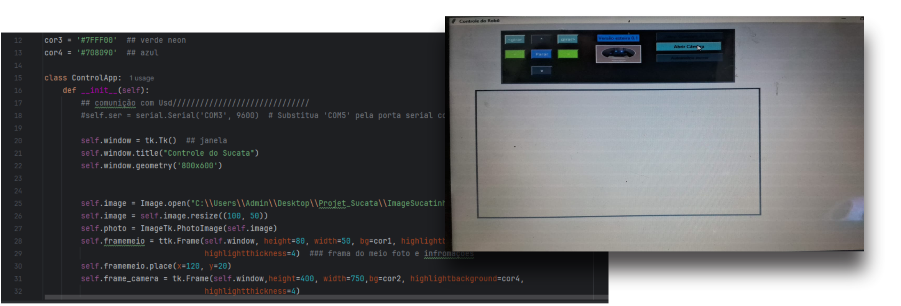
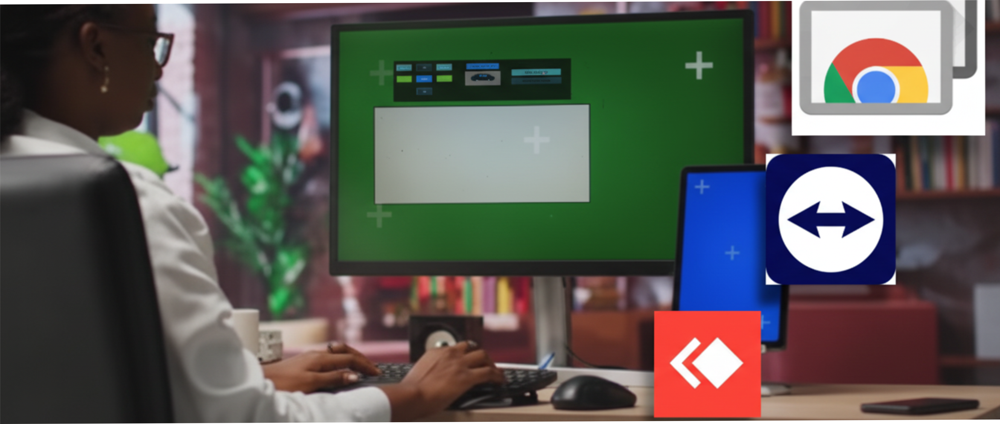
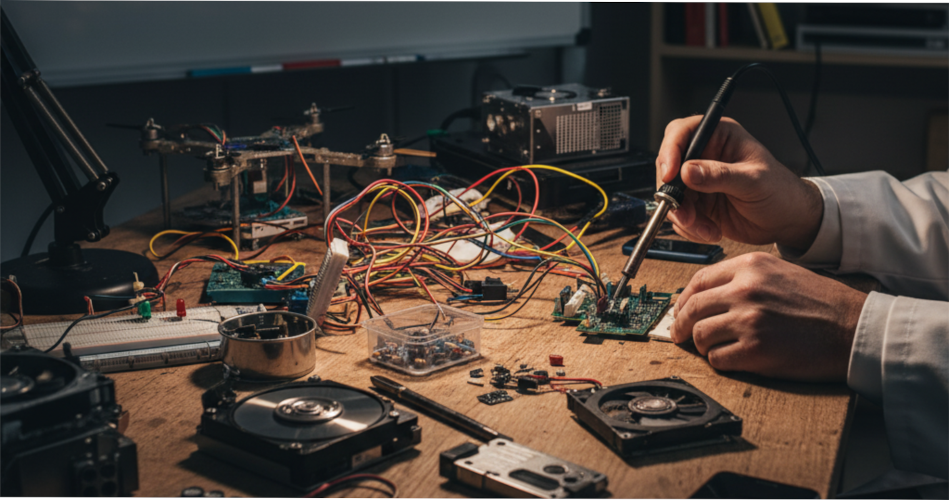
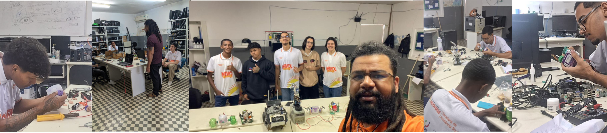
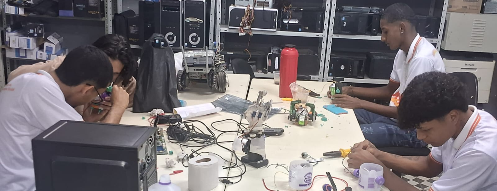
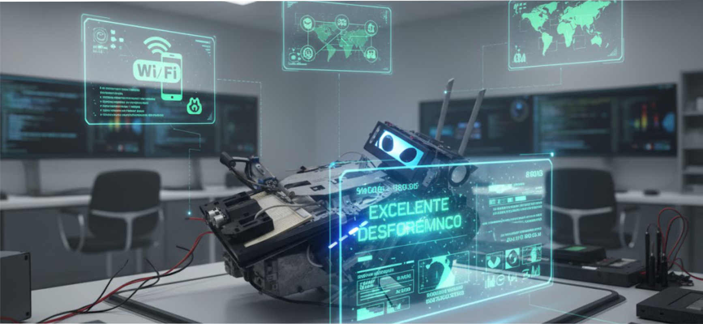

O Projeto Sucatinha: Robótica e Sustentabilidade

Este trabalho apresenta o desenvolvimento do robô Sucatinha, construído
integralmente com peças reaproveitadas de impressoras, notebooks e motores
automotivos.
O projeto demonstra a viabilidade do lixo eletrônico como ferramenta
educacional.
Hardware: Componentes de Sucata

A base do robô foi construída a partir da
carcaça metálica de uma
fotocopiadora
. A propulsão utiliza
motores de vidro elétrico
automotivos
, e a alimentação vem de baterias reaproveitadas de
notebook e sucata.
Base Lógica: Placa-Mãe Reciclada

A estrutura utiliza uma placa-mãe reciclada de table governamental (4 GB RAM, 80
GB SSD, Windows 10 Lite) como unidade principal.Essa placa é
responsável pela parte lógica e pelo controle geral do sistema.
Controle de Motores: Arduino e Relés

Um Arduino UNO é responsável pelo controle dos motores. Devido à alta corrente requerida
pelos motores automotivos, o Arduino é conectado a uma placa de relés para o acionamento
seguro.
O Software de Controle em Python

A aplicação principal foi desenvolvida em Python. Este
programa envia comandos de movimentação para o Arduino via comunicação serial, integrando o hardware e o software de maneira eficiente.
Integração IoT (Internet das Coisas)

O sistema conta com um **módulo IoT** baseado em espelhamento de tela com programas para manutenção remota.
Isso permite a interação e o controle remoto do robô Sucatinha via rede,
explorando conceitos de Internet das Coisas.
Robótica Sustentável e Educação

O projeto tem forte caráter ambiental, convertendo o lixo eletrônico em aprendizado
prático.
A sustentabilidade tecnológica reforça a importância do
reaproveitamento como prática educativa no ensino técnico.
Oficina Prática: Relato da Experiência

Uma oficina prática foi realizada com sucesso, onde os alunos
aprenderam a reutilizar componentes de sucata (drives de DVD, baterias, etc.)
para montar mini robôs e pequenos circuitos funcionais.
Aprendizados da Oficina

A prática com sucata estimulou o desenvolvimento de habilidades como
improvisação, trabalho em equipe e resolução de problemas.
Reforçou conceitos de polaridade, ligações elétricas e montagem estrutural.
Conclusões e Futuras Melhorias

O robô demonstrou excelente desempenho, validando a robótica
sustentávelAs futuras melhorias propostas incluem controle via
**Wi-Fi**, integração de **sensores inteligentes** e uso de **visão computacional**.